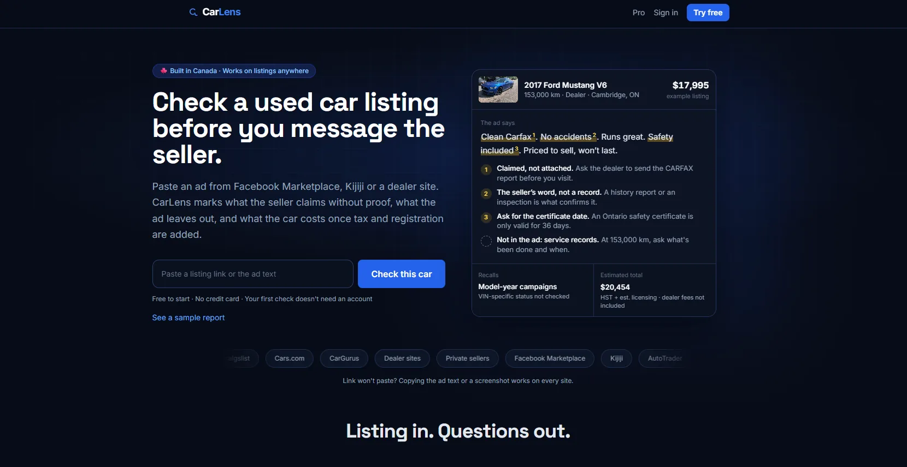
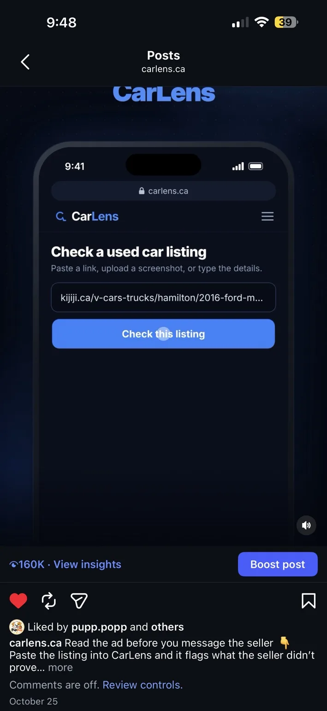
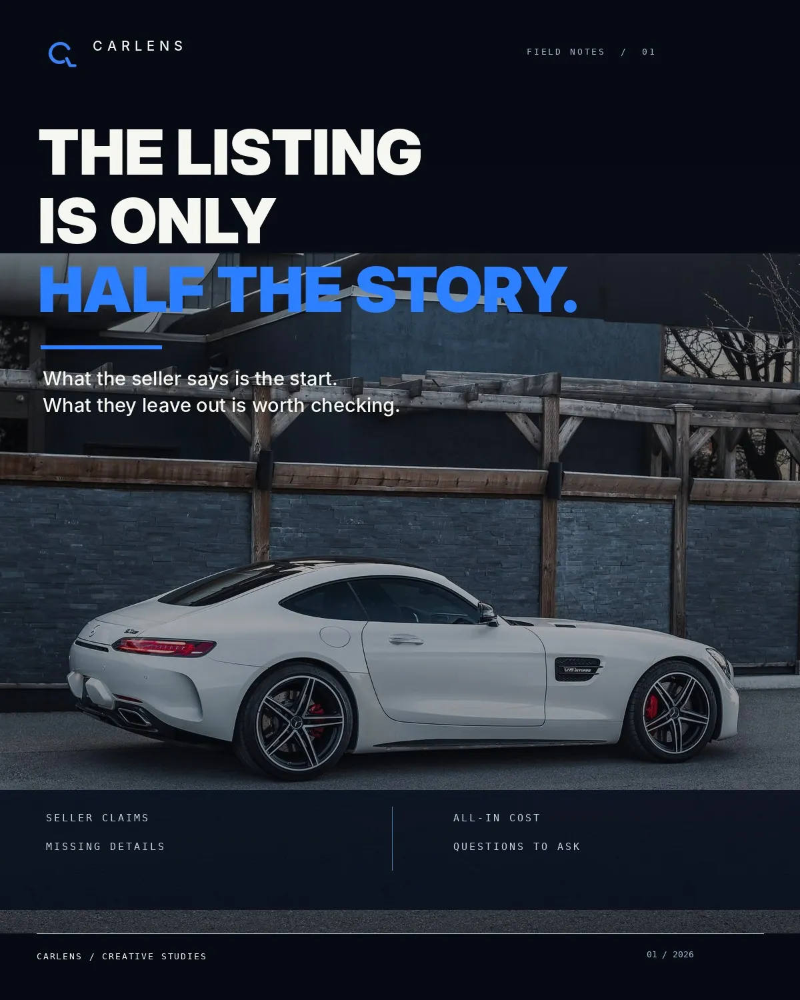
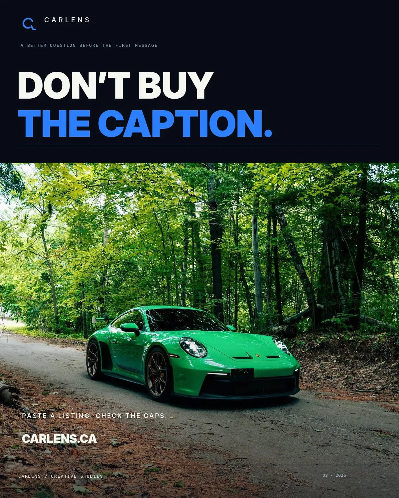
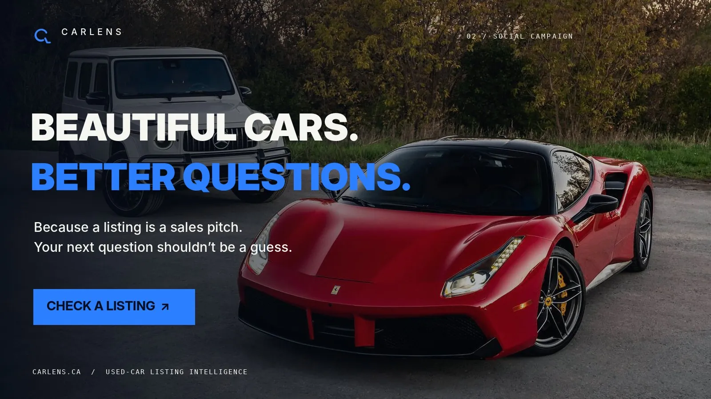

250+ programmatic vehicle pages
Make, model and year pages ("2018 Honda Civic", "2016 Toyota Corolla") built to catch long-tail Canadian searches. They now bring in about 88% of the site's search impressions.
I'm Brayden. I launched CarLens.ca on my own, ran every part of its funnel, and built the tools behind it with Claude Code: programmatic pages, a calculator suite and an open-source SEO tool. I'm looking for a growth or AI automation role where I own the campaigns and the systems behind them.
braydenb945@gmail.comGrowth & AI automation · Waterloo, ON · Open to work
CarLens is a free AI tool for Canadian used-car buyers. Paste a Kijiji, AutoTrader or Marketplace listing and it flags what the seller left out, checks recalls and estimates what the car will really cost. I built it and did all of its marketing.

The product was the easy part. The hard part was getting people to find it, trust it and actually paste a listing.
So I treated it like a growth job: search for discovery, paid social for reach, the landing page for conversion, email for activation. Here's what moved and what didn't.
Each week runs Sunday to Saturday; position is that week's impression-weighted average, so the first and last points (#33, #12.6) differ from the whole-month averages above (26, 12). The chart stops at the last full week, Oct 31. The 6,538 total above also includes Nov 1 (56 impressions).
Search Console's Generative AI features report counts each time a carlens.ca link appeared in an AI Overview or AI Mode answer. It reports impressions only, with no clicks or position. Most came from the programmatic vehicle pages.
Page totals add up to 426, slightly more than 415, because one AI answer can link more than one CarLens page.
Make, model and year pages ("2018 Honda Civic", "2016 Toyota Corolla") built to catch long-tail Canadian searches. They now bring in about 88% of the site's search impressions.
Pages and guides written so AI Overviews and assistants can quote them, like how to negotiate a used-car price in Canada. That page alone earned 261 impressions at an average position of about 10.
Wrote the copy, made the creative and moved budget between audiences based on results, on about $1.5K of total spend.
Signups weren't turning into scans, and the account gate before the first scan was the biggest drop-off. I removed it, rebuilt the landing page around one paste-a-listing action and set up Klaviyo flows to bring new users back.
The calculators link to and from the /cars pages, which is the internal-linking fix my striking-distance tool pointed to. This is only a few days of data, so treat it as an early signal. I'll update it with a full month. Try the calculators.

160K organic views on a product video built around one buyer problem: the listing doesn't prove what the seller claims. Big reach, modest engagement. Next test is a sharper first-second hook.



Half the job is marketing. The other half is building the tools that make it work. I build with Claude Code and can walk you through how each of these works and where it breaks.
Seven calculators for Canadian car buyers: lease, loan, lease vs finance, affordability, fuel cost, lease buyout and cost of ownership. Inputs save to the URL so results can be shared.
A Python tool that reads a Search Console export and ranks the pages closest to page one by the clicks they're missing. One file, no installs, no API keys.
Scraper and writer agents collecting 30 days of Kijiji used-car listings to measure local pricing and recurring scam patterns for CarLens content.
Plain HTML, CSS and a little JavaScript. The chart is drawn from weekly Search Console data, the theme follows your device, and broken links get their own report.
Before and alongside CarLens: websites, campaigns and outreach for real businesses, mostly in automotive and home services.
GTA home-services businesses
Web designer & content producer · Waterloo
Digital marketing & web coordinator · Vaughan · company has since closed
I don't wait on a developer. If a landing page needs a new section or a fix, I ship it the same day with Claude Code, then check the numbers.
I'd rather show a weak number than hide it. Reach isn't revenue, and impressions aren't clicks. I'll tell you which one we're looking at.
I'm open to growth marketing, SEO, GTM engineering and AI automation roles in Waterloo, the GTA or remote. Pick the resume that fits the role. Email is the fastest way to reach me.
braydenb945@gmail.com